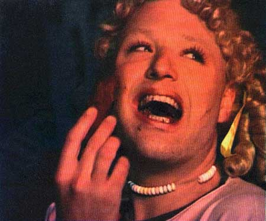

| April 2004 |

| REN KAGEMAND |
| CENSUR AF DANSK
HOMO-PROGRAM |
| Skribent Sune Prahl Knudsen |
Må man spise kage på dansk tv? Ikke hvis det står til shefen på Kanal København. Han smed i marts et homo-program ud fra sendefladen, fordi programmets indhold ifølge ham var i strid med lovgivningen. Det er dog yderst tvivlsomt.
I sidste måned blev homo-programmet Kanal dunst pludselig hevet af sendefladen på lokaltv-stationen Kanal København. Begrundelsen fra stationens ledelse lød, at programmet var gået over stregen.
"Vi havde lavet et indslag med Ramona Macho i et kageorgie. Iført pigetøjkostume spiste hun kakaokage og slikkede sine fingre. Men kakaokagen mindede åbenbart for meget om noget andet, og så fik vi det røde kort", fortæller Knud Vesterskov fra dunst. Indslaget blev aldrig vist, og Kanal dunst fik i stedet besked om at hente deres ting på stationen og afleveres deres nøgle med det samme. Hos Kanal dunst mener man, at der er tale om en overreaktion:
"Først syntes de, at det, vi lavede, var kunst og meget spændende. Men pludselig blev det åbenbart for meget. Men de burde altså tage en slapper - især når de lige efter Kanal dunst viste hetero-porno til den lyse morgen", siger Knud Vesterskov.
Tvivlsomt lovgrundlag
Palle Lundstrøm, der er leder af Kanal København, ønsker ikke at udtale sig til Panbladet om sagen. Han siger kort, at Kanal dunst ikke overholdt loven på området, og derfor måtte udsendelserne stoppes. Denne udlægning af loven om lokal-tv er dog yderst tvivlsom, forklarer Birgitte Rasmussen fra sekretariatet for Lokalradionævnet for København:
"Lovgivningen siger kun, at man ikke må skade mindreårige eller opfordre til had mod bestemte befolkningsgrupper. Ellers er der meget frie rammer for ytringsfriheden. Der står intet konkret om, hvad man må sende eller ej udover decideret porno eller umotiveret vold", siger hun.
Hun forklarer, at nævnet kan henstille til at udsendelser med et indhold, der kan skønnes at skade mindreårige, bliver sendt på et sent tidspunkt. Kanal dunst blev sendt ved 23-tiden, og på den baggrund vurderer Birgitte Rasmussenm, at udsendelserne kunne indeholde stort set alt, der ikke strider mod anden dansk lovgivning:
"Der var for nogle år siden en polemik om porno på Kanal København. På den baggrund inddrog det kolale tv-nævn sendetilladelsen. Men det blev underkendt, da sagen senere blev anket. Så der er meget vide rammer", siger hun.
Henvist til TV-GLAD
Hos Kanal dunst mener man, at det er Kanal Københavns egne grænser og ikke lovgivningen, der er blevet overtrådt.
"De gav os allerede det gule kort, da vi viste en scene med bare tissemænd i en tidligere udsendelse. Så det var kun et spørgsmål om tid, før de greb ind. Det blev mere og mere tydelig, hvordan vores humor var forskellig", fortæller Ramona Macho fra Kanal dunst.
Og medarbejderne på Kanal København lagde da heller ikke skjul på deres syn på udsendelserne, da Dennis Agerblad fra Kanal dunst skulle aflevere nøglerne.
"Hele stationen stod og gloede på mig og fnisede. Det var totalt nedværdigende. Og på vej ud af døren foreslog en, at vi eventuelt kunne prøve på TV-GLAD (Tv-station for udviklingshæmmede), hvis vi havde lyst til at lave tv", forklarer han.
Se det bortcensurerede klip
Print denne side